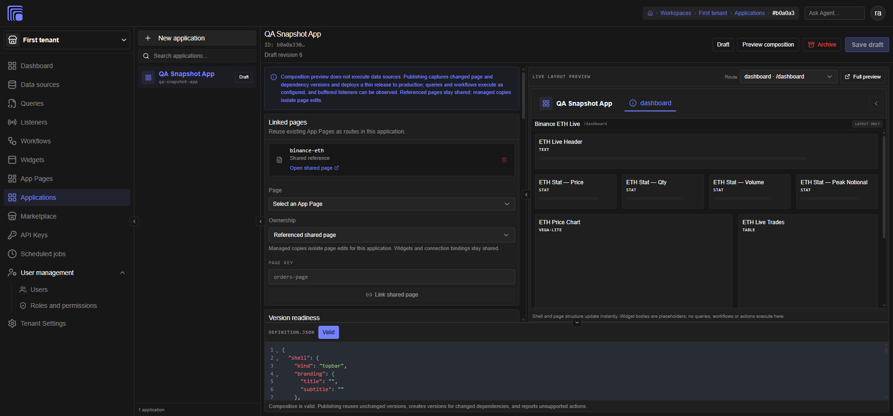
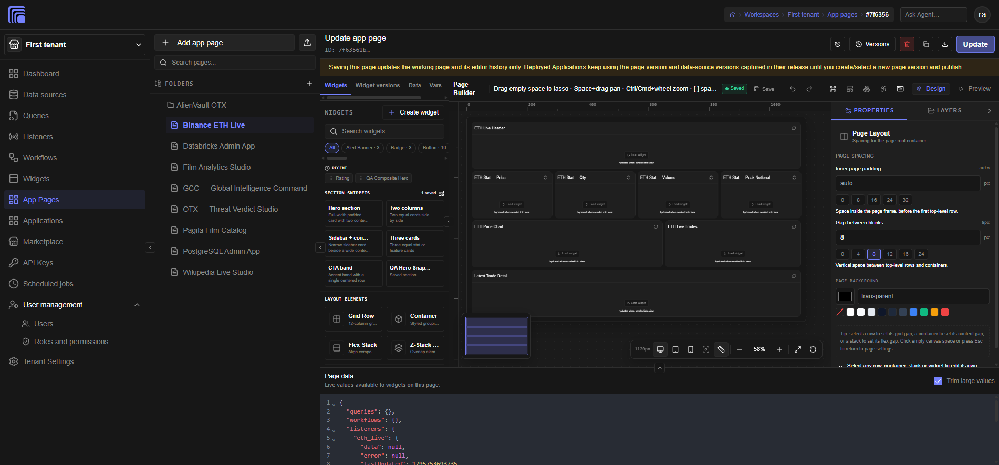
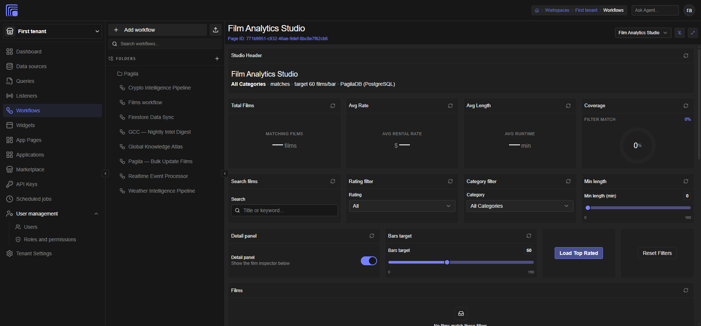
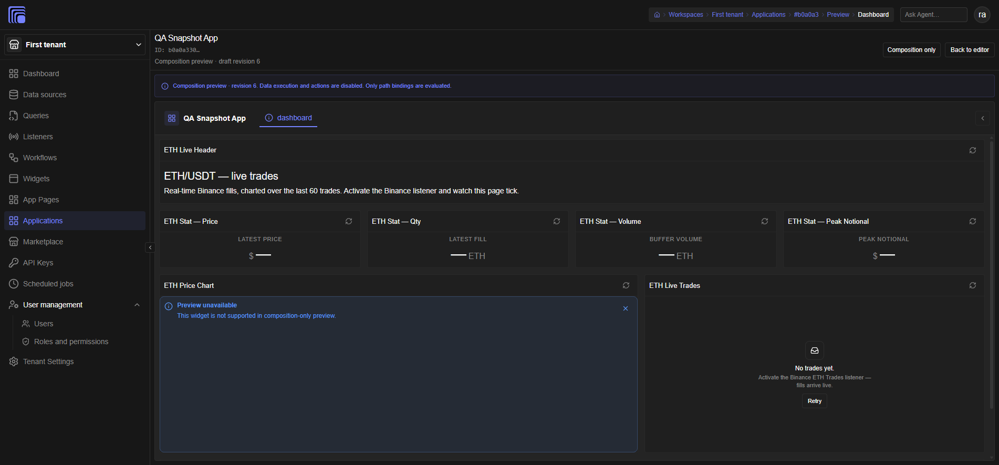

The self-hosted application platform for data, automation, internal tools and versioned releases.

Jet Admin replaces the glue between internal databases, APIs, automations and the interfaces your team needs every day.
PostgreSQL, MySQL, SQL Server, MongoDB, REST, GraphQL, Kafka, MQTT, S3, Google Sheets, Stripe and dozens more behind one typed connector model.
Parameterized SQL and HTTP queries, live listener buffers, webhooks and SSE feeds become reusable data models for every surface.
Temporal-backed DAGs with conditions, loops, fan-out/join, approvals, sub-workflows, JavaScript and data collection.
A Craft.js canvas with rows, stacks, containers, responsive breakpoints, 40+ widgets, expressions, events and saved sections.
Link pages into routed applications, customize navigation shells, preview live, then publish immutable releases with rollback.
Tenant isolation, Casbin RBAC, audit filters, versioned assets, environment bindings, consumer policies and release history.
Start at the layer you need. Every layer is independently versioned and scoped to the active tenant.
Connect
Data sources, credentials, schema discovery, health checks.
02Model
Parameterized queries, live listeners and reusable widget definitions.
03Automate
Workflow DAGs, approvals, loops, JavaScript and Temporal execution.
04Compose
App pages, responsive layout, widget events, state and saved sections.
05Deliver
Applications, routes, navigation shells, immutable releases and rollback.
Agent-ready: the bundled MCP server exposes 130 tools for datasources, queries, listeners, workflows, app pages, widgets, IAM and validation so coding agents can inspect and operate the platform. See MCP server.



Manage applications in the sidebar, edit routes and navigation, preview the live shell, and keep JSON in a resizable footer.
A practical middle ground between hand-built admin panels and SaaS-only low-code tools.
Self-hosted by default
Run the full stack with Docker Compose. Your data, credentials and releases stay in your environment.
Versioned, not vibes
Queries, widgets, pages and applications compile into immutable releases with hashes, pinning and rollback.
Built for operators
Dashboards, approvals, live monitoring, saved sections and reusable widgets are first-class, not plugins.
Open and extensible
Typed widget contracts, descriptor-driven schemas, bundle export/import, a widget library and an MCP server.
Follow the quickstart to connect a source, create a query, compose a page and publish a versioned application.